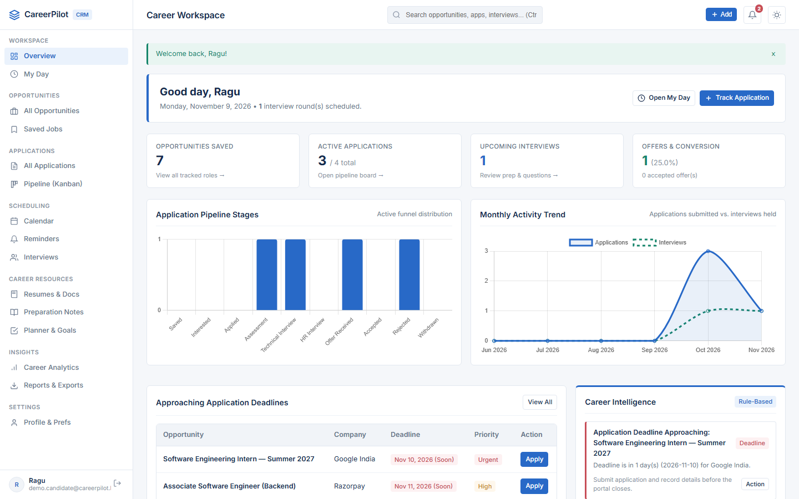

CAREERPILOT
JOB CRM.
A centralized job-search operating system and CRM built with Django 5.1 and Chart.js — replacing scattered spreadsheets with a 10-stage Kanban pipeline, 'My Day' command center, 8-step interview prep checklists, resume versioning, and strict user isolation.

STRUCTURED EXECUTION ACROSS EVERY JOB APPLICATION.
Candidates routinely lose track of tailored CV versions, recruiter follow-ups, and round feedback. CareerPilot unifies pre-application triage through offer acceptance.
10-Stage Kanban & Table
Tracks Saved, Interested, Applied, Assessment, Technical, HR, Offer, Accepted, Rejected, and Withdrawn with non-destructive stage history.
"My Day" Command Center
Surfaces urgent 48-hour interviews, overdue recruiter follow-ups, and weekly application habit quotas on login.
Duplicate Opportunity Guard
Real-time client and server duplicate checks prevent accidental repeat submissions to the same company/role.
8-Step Interview Checklist
Links multi-round interviews with interactive prep checklists and a searchable past-question retrospective bank.
Protected Resume Versioning
Stores customized CV variants per application with ownership-verified download permissions.
10 Chart.js Charts & Exports
Visualizes response rates, funnel drop-off, salary bands, and outputs filtered OpenPyXL Excel / CSV files.
HOW IT WORKS.
Tenant-isolated Django apps (opportunities, applications, interviews, reminders, documents, planner, analytics) share unified ORM models.
Save Opp
Track role specs + duplicate check.
Attach CV
Map tailored resume version & apply.
Track Stage
10-stage Kanban + audit history.
My Day / Prep
Follow-up alerts & 8-step checklists.
Analyze BI
10 Chart.js metrics + Excel export.
APPLICATION SCREENSHOTS.
Live screens captured from the running application. Click any image to view full size, or follow setup instructions in the GitHub repository.
CRM MODULES & DATA ISOLATION SPECS.
Key modules, rules, safety checks, and automated test results documented in the repository.
| CRM Module | Core Feature | Verification |
|---|---|---|
| Applications App | Table + drag-and-drop Kanban + stage history | Non-destructive transition audit log |
| Interviews App | Multi-round tracker + 8-step prep + Q&A bank | Links feedback to specific rounds |
| Tenant Security | User-ownership queryset & download guards | Strict cross-user data isolation |
| Automated Suite | Full-stack Django model/view/export suite | 34 / 34 Passed (100%) |
CORE TECHNOLOGIES.
Frameworks, databases, visualization tools, and testing libraries used in CareerPilot.
FUTURE ENHANCEMENTS.
Upcoming improvements planned for CareerPilot.
EXPLORE SOURCE & DOCS.
View the complete codebase, sample datasets, quick-launch scripts, and automated test suites on GitHub.